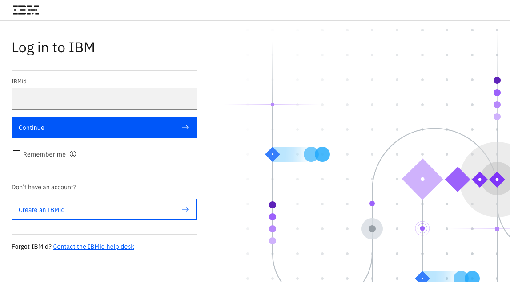
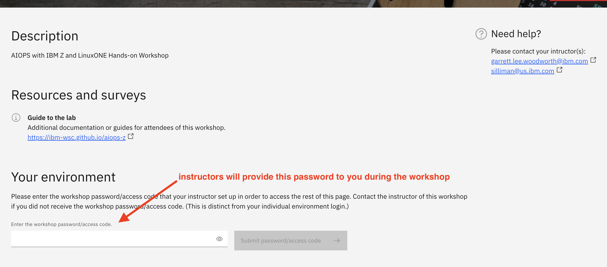
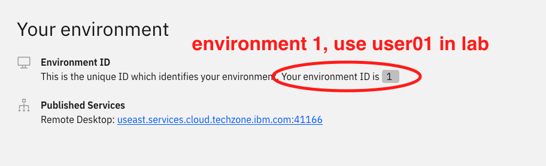
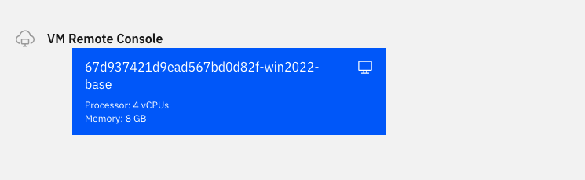

Accessing the Environment¶
From your local workstation, you will access a workshop Windows virtual machine from which you will perform the lab. This virtual machine is provided by the IBM Technology Zone service.
The directions for logging in to IBM Technology Zone and accessing your workshop virtual machine are given in the next section, but please read the following tips first:
From your local workstation
Your experience may vary, but in past workshops, the virtual machines seemed to work best in a Firefox browser on your local workstation. Running the virtual machines in Chrome sometimes resulted in an issue where your mouse pointer is not visible.
From within the workshop virtual machine
Regardless of which browser you use on your local workstation, within the virtual machine itself, Chrome has been set to the default browser. The lab works best in Chrome within the virtual machine.
Within your virtual machine, the workshop website has been set as your home page within Chrome. Once you are successfully logged in to your virtual machine, it is recommended for your convenience that you stop accessing this site from your local workstation but instead access this site from within your virtual machine.
Accessing your Virtual Machine¶
-
Go here: (LINK TBD)
-
If you are not currently logged in with your IBMid, you will be prompted to log in at a screen like below. If you do not already have an IBMid, the log in page should contain a link to allow you to create one. They are free and it only takes a few minutes to create it.

Tip
If the log in page does not have an obvious link for creating an IBMid, try here
-
You should reach the workshop page. There will be a field where you are asked to enter the workshop password, as in this screen snippet:

Enter the workshop password provided by your instructor. For security reasons, this password is not listed here.
-
Once you successfully enter the workshop password, you should be assigned an environment, as shown in the below screen snippet:

On this same page that shows the environment, near the bottom will be a large blue button, as shown below, which will allow you to access your workshop virtual machine within your browser.

Important
Take note of your environment number, as you should use that number as the last two digits of your userid for the lab. For example, if you were assigned environment 1, then you will use the userid user01 throughout the labs. If you were assigned environment 2, then you will use the userid user02 throught the labs. And so on.
-
If prompted, log into the Windows virtual machine with username Administrator (which should already be set for you) and password:
IBMDem0s(that's a zero). You may already be logged in when first accessing the VM.